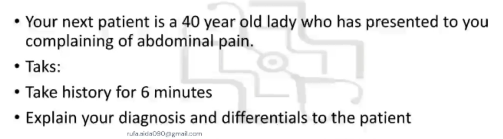
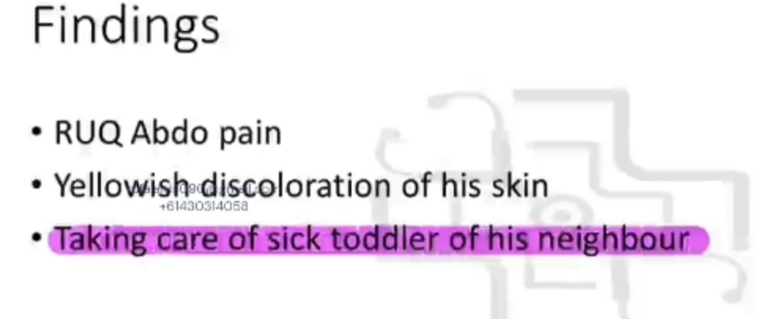

Source: Dr. Amir workshop — GIT 2026 / class 5 liver cases (Aug 2026 drop) · Specialty: gastroenterology
Step 1 - Opening: confirm haemodynamic stability if not given (BP, PR, RR, temperature); ID check, hand hygiene, introduction. Open question - patient reports right upper quadrant pain after returning from South-East Asia. Acknowledge, empathise, reassure.
Step 2 - Pain assessment (SIQORAA): Site (if RLQ, ask where it started/shifted), Intensity (0-10), Quality (sharp vs dull), Onset/timing (constant vs intermittent, worsening), Radiation, Alleviating/aggravating factors (worse after eating - screens PUD, pancreatitis, cholecystitis; positional).
Travel history (ABCDEFG): Activities and destination; Bushwalking/insect bites; Contact with sick people/animals; Drugs; Exposure (tattoos, piercing, transfusion, procedures); Food (street food - positive); GP pre-travel vaccination/malaria prophylaxis.
General GI: nausea/vomiting (upper), diarrhoea/constipation (lower), bloating/wind (mid), fever (none).
Red flag GI: weight loss, appetite loss, lumps/nodes, tiredness/dizziness, family history of bowel cancer.
Hepatitis: jaundice (positive), itch, dark urine/pale stool. Gallbladder: fatty-food pain. Surgery.
Hepatitis risk factors (ABP FIT NO SEX): Alcohol/Antibiotics, Blood, Piercing, Food, IV drugs, Tattoo/Travel, Needle-stick/Occupation, Sexual history (safe sex, sex overseas).
Positive findings: RUQ pain, jaundice, no fever, street food, travel.
Diagnosis: acute hepatitis - liver inflammation - most likely hepatitis A (faeco-oral) acquired via street food overseas.
Differentials: hepatitis B and C (blood/sexual transmission); malignancy (liver, GB, pancreas); gallstones causing cholecystitis/obstructive jaundice/cholangitis; antibiotic/alcohol-induced hepatitis; pancreatitis; PUD; GORD; ACS/lower-lobe pneumonia; travel-related infection (malaria, dengue, EBV, CMV, chikungunya).
Same structured screen as Case 1. Diagnosis: acute hepatitis, most likely hepatitis A acquired via faeco-oral contact with a sick person. Differentials as above (hepatitis B/C, malignancy, gallstone disease, drug/alcohol-induced hepatitis, pancreatitis, PUD, GORD, ACS/pneumonia, travel-related infection).


Reviewed by: history-taking-expert (Australian clinical supervisor) · fact-checked against the irStudy medical textbook RAG index.